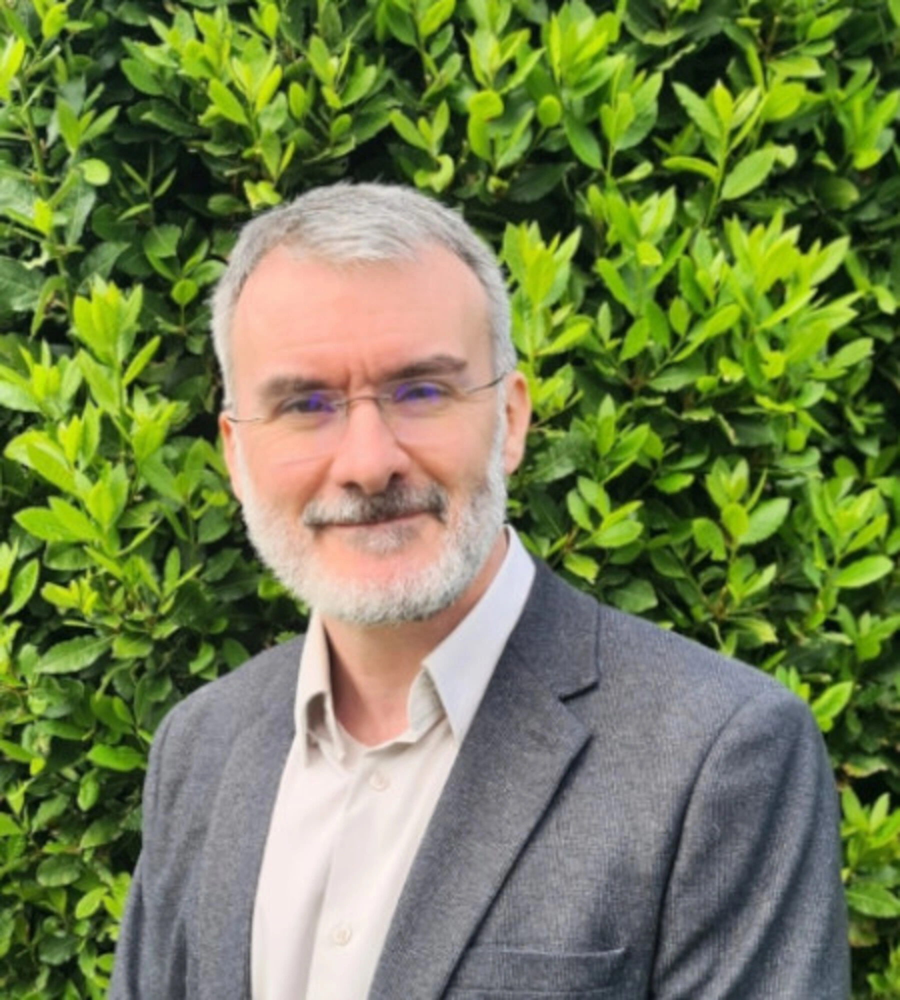
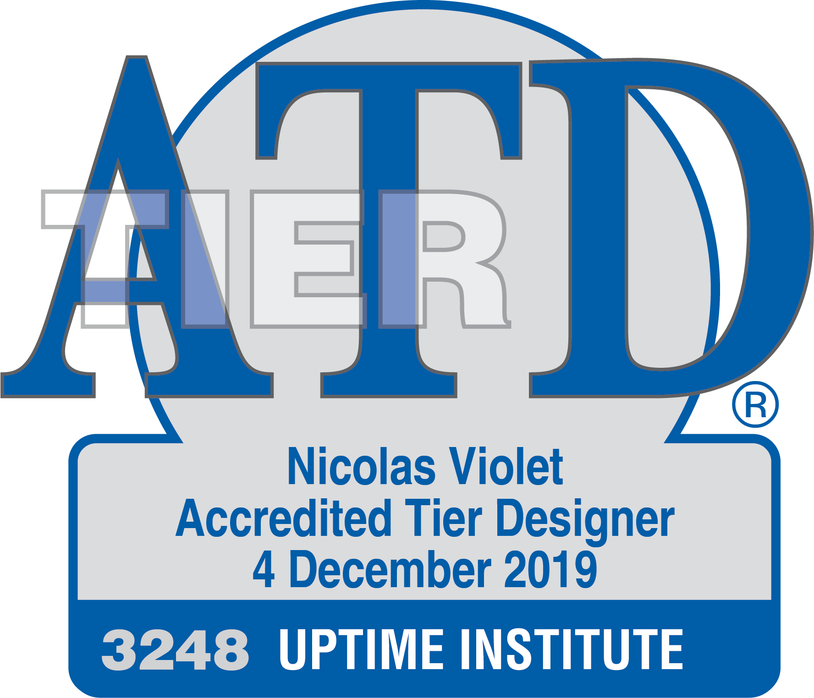

VEDITECH, c'est d'abord un homme et une conviction : les meilleures décisions immobilières naissent quand l'expertise technique et le conseil stratégique ne font qu'un.

Ingénieur de formation, Nicolas Violet exerce dans les corps d'état techniques du bâtiment depuis plus de vingt-cinq ans.
Responsable de bureaux d'études en conception comme en exécution, il a piloté des projets de tout type et de tout budget — du tertiaire au data center, de l'industrie au logement. Cette polyvalence lui donne une lecture rare : celle d'un ingénieur qui connaît autant la contrainte du chantier que l'enjeu patrimonial du décideur.
Ancien expert judiciaire près le TGI d'Amiens, il met cette double culture — technique de terrain et rigueur de l'expertise — au service de vos arbitrages. Avec VEDITECH, il a fait le choix d'un accompagnement direct, sans strate intermédiaire : vous parlez à celui qui analyse, conçoit et pilote.
Au-delà de l'expérience, des titres qui engagent : l'accréditation Uptime sur la disponibilité des data centers, et le statut d'expert judiciaire qui fonde la rigueur réglementaire de chaque mission.

Accréditation n° 3248, délivrée en décembre 2019. Conception et classification de la disponibilité des data centers, du Tier I au Tier IV — la référence mondiale du secteur.
Près le TGI d'Amiens. Une lecture technique des situations litigieuses et une maîtrise du cadre réglementaire qui sécurisent vos décisions.
Proposer des solutions techniques actuelles, fiables et éco-énergétiques — être une force de proposition, pas un simple exécutant.
Comprendre puis exprimer le besoin réel de chaque partenaire avant de proposer la moindre solution.
Penser la compétitivité et l'attractivité de l'actif sur toute sa durée de vie, dans une logique de partenariat durable.
Tenir les coûts, les délais et la parole donnée. Une responsabilité clairement portée, du diagnostic à la réception.
Chaque projet s'inscrit dans un souci permanent d'optimisation éco-énergétique et de rendement des matériels. VEDITECH propose des architectures « éco-conception » et des lots CVC innovants, fiables et économes — pour une consommation moindre, sur la durée.
Conception, modélisation et instrumentation de terrain — l'outillage qui permet de chiffrer, vérifier et prouver.
La meilleure façon de juger une expertise, c'est d'en parler. Présentez-nous votre situation.